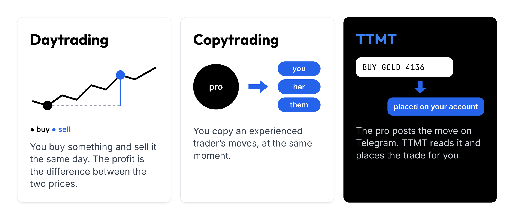
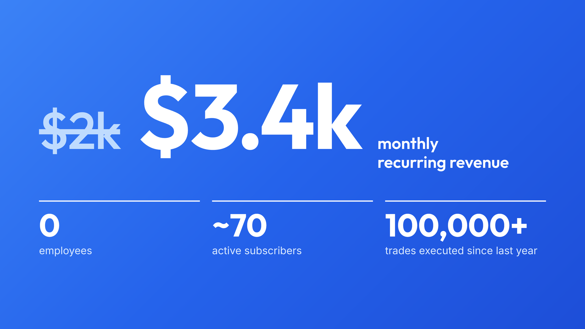
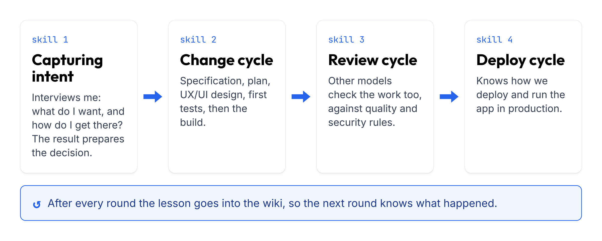
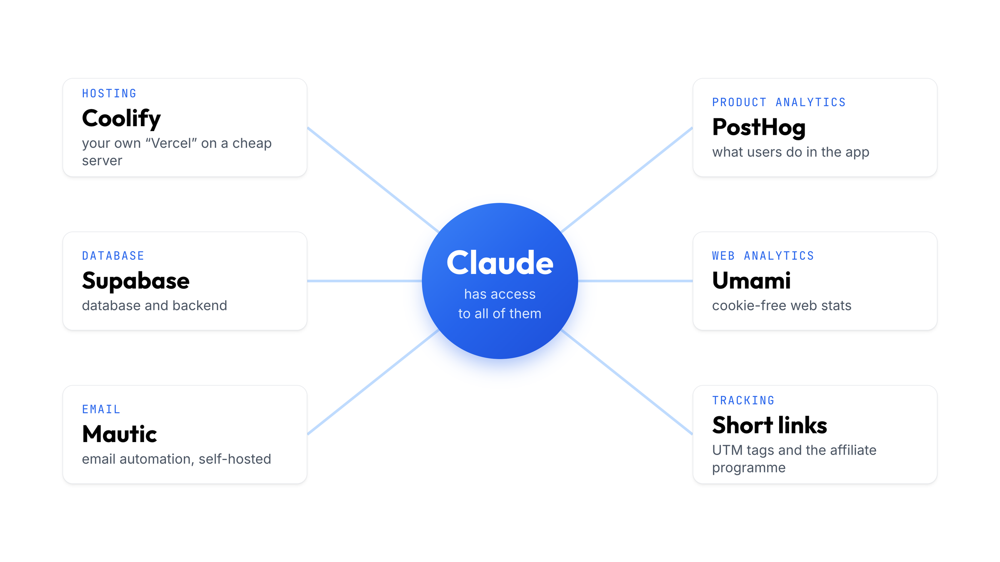
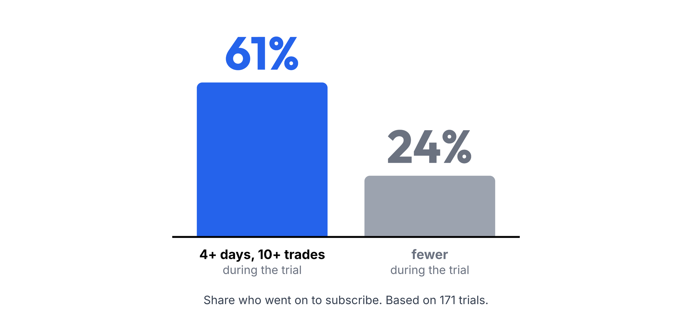
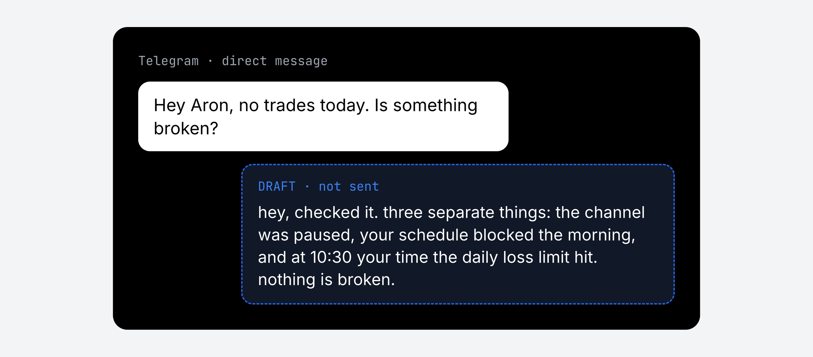

I take things apart and put things together. The first thing I took apart was at about eight: my dad came home with a very expensive computer with an LCD screen, and by the evening it no longer worked. I have taken a lot apart since, but I have put plenty together too. I helped international newspapers understand what was happening in Hungary. I started an avant-garde fashion label with friends. I have shared a stage with Mari Törőcsik and Xavér Varnus, built Bánkitó Festival and the Auróra cultural centre, help out at the family winery, and started learning the piano past thirty.
The biggest thing I have put together so far was my first startup, Égboltkép. We went on Shark Tank, Péter Balogh invested, and the company ran in five countries, with a big team and millions in funding. Then I made every mistake a first-time founder makes, and the company went under. It left a large debt to an institutional investor. At the time I said I would not start another company for ten years (and I think my family felt the same :D). Of course I couldn't sit still.
What am I building now?
My current company is TTMT, a tool for daytraders. When a trader posts a signal in their Telegram channel ("buy gold"), the app reads it and places the trade on the user's broker account. That is copied trading, or copytrading.

When I submitted the title of my talk for this year's Service Design Day ($2k MRR, zero employees. What does AI do instead of me?), the company was making $2,000 in monthly subscription revenue (MRR, monthly recurring revenue). Today it is at $3,400. I have close to seventy active subscribers, and since last year the app has executed more than a hundred thousand trades on broker accounts. I have no employees. In fact, I only recently started working on my own company half-time myself.

This article is about how I do all of that alone.
What does AI-first mean?
GPT-3.5 opened the age of the ideas person. I felt I had finally been given a superpower. After my previous company failed, I knew one thing for certain: this time I wanted to build slowly, organically, and without serious risk. I worked nights and weekends and didn't want to take chances. Building the company had to fit next to a job and a family. The only way to do that was to pay no employees and, ideally, not to work too much myself 😅
To me, an AI-first company is one where AI is built into the company's DNA, in every area. In my case AI agents do most of the work in software development, UX research and design, customer acquisition, finance and community management.
How do I develop?
One basic problem with AI is that it is not deterministic: give it the same task ten times and you get ten different results. You keep that in check by describing, in as much detail as you can, how you work and which rules the development process has to follow. None of this is new. Agentic development follows the same methods software developers have used for decades. The "only" job is working out how to carry those schools of thought into agentic coding.
Every new feature I build goes through four steps, and each step has its own skill. A skill is a reusable package of instructions that Claude loads at the right moment.

Capturing intent. This skill interviews me first. It asks the critical questions: what I want and how I want to get there. The result is a document that prepares the decision.
Change cycle. From that document come a specification, a plan and a UX/UI design, the first tests run, and then the implementation follows.
Review cycle. I work mostly with Claude, but here other models join in and check its work. This cycle reviews the previous agents' work against strict quality and security policies.
Deploy cycle. This skill knows exactly how we deploy and operate the app in production.
If you are curious about my skills, you can find them on my GitHub profile.
What stack does the software run on?
If you are building a company alone and without money, this is one of the most important questions. I believe in open-source software you run on your own server, although over the past ten years that has come back to bite me more than once. These tools are great, but they often need tinkering, and running them takes a lot of energy. I use six tools for the most important areas.
Coolify. This open-source gem is maintained by a Hungarian developer, András Bácsai. Think of it as a free Vercel running on your own server. You install it on an Ubuntu server and then run apps, databases, backends, frontends, websites, air fryers and hair dryers on it in Docker containers. At the start, ten dollars a month easily covers it.
Supabase. It provides the database and part of the backend. This was a deliberate decision. In 2026 it is very easy to believe that everything should be built in-house, custom, but that has a price: when something breaks, you are the one who has to fix it, and every hour you spend debugging a hand-made database is an hour taken from finding customers. So I pay Supabase a few hundred dollars a month for the peace of mind.
Mautic. My favourite. I recommend it to any marketer who wants serious email automation on a small budget. It is open-source email marketing software that also runs on a five-to-ten-dollar server, or inside Coolify. You can have a hundred thousand email addresses without paying a fortune to HubSpot or ActiveCampaign. You track contacts the same way, and you can build automated email campaigns as complex as you like.
PostHog. Product analytics. It records sessions, captures what happens inside your app and stores logs. Claude can then use what collects there.
Umami. A self-hosted Google Analytics. It works without cookies, so it collects a fair amount of visitor data even in the EU.
My own short-link system. UTM tagging and the affiliate programme run through it.
Claude has access to all of the above. When I need to decide which feature to build, it logs into Coolify, asks Umami where visitors drop out of the funnel, and turns that into a recommendation.

Where does the company's knowledge live?
I use Andrej Karpathy's LLM wiki idea: a collection of text files that link to each other. Most of the world uses this pattern for code documentation, so that when the code changes, the change leaves a lasting trace a person can read.

I have two of these wikis, one for the code and one for the company. The company wiki holds meeting notes, marketing material and competitor analyses. I do a lot of interviews with my users, record every one, and the transcript goes into the wiki too.
When I do marketing or development, my most important job is to give Claude credible, well-assembled context. If I am working out how to overtake a competitor in Google results, Claude starts from research I have already done: who does what, why, and with which features. What I have learned once does not have to be worked out again. I can also ask the company wiki what my users' most common pain point is. If tomorrow I am deciding what to build next, that will be the most important input.
When do I pay for ads?
My principle is to prove first that the product makes sense (product-market fit), and only then pay for advertising. So everything I do is built from the bottom up.
For this I use the AARRR model, whose metrics are called pirate metrics because of how they sound: acquisition, activation, retention, referral, revenue. New users come in at the top of the funnel, and at the bottom are the people who stay and pay. I start at the bottom. As long as the bucket leaks, pouring more energy and money into it is pointless. There is already some interest, so first I work on getting more people to subscribe after the trial, and to stay for the second and third month.
This is where AI helps me most. It turned out, for example, that among people who trade with the software on at least four days of their trial and make at least ten trades, 61 percent subscribe. Among those who don't, only 24 percent do. In the past I would have spent days in Google Analytics and Data Studio to find where real activation happens. This time it took the data from the six tools above and the company wiki, and Claude did the rest.

How do I do email?
A marketer sits for hours in HubSpot or ActiveCampaign to put an email sequence together. I haven't opened Mautic's interface in months. When I need an onboarding sequence, I tell Claude to log into Mautic and write the emails. I review them, Claude uploads the campaign, and off it goes. What used to take a marketer days is now half a thought.
Claude writes the emails, but in my style.
Does SEO really take years?
Most people think SEO and GEO (showing up in AI answers) are months or years of work that may pay off one day. I had never worked on it before. Then in a single day I ran a thirteen-step process with Claude, and within four weeks clicks from search went from 10–20 a day to more than 200 a day (yes, 10x).

I sent the result to an entrepreneur friend, Andris. I asked Claude to write down what my Claude had done, and he showed that document to his own audience. In that document my Claude explains to yours what to do. If you'd like it, I'll send it to you too. Pretty meta :D
Founder-led marketing vs. AI automation: what is allowed and what isn't?
The community, and a live relationship with it, is the backbone of my business. I spend about seventy percent of my time with customers in the community chat, which has close to a hundred and twenty users, and I talk to a lot of them one to one as well. This is where I drew the most important line between what I hand to AI and what stays firmly with me.
Claude reads every incoming message, looks for the relevant answer in the wiki and the code, and writes it up as a draft. The draft waits for me in Telegram. I open it, and if I like it I send it; if not, I rewrite or delete it. Naturally it writes the way I do. The checking stays with me for now, but Claude does most of the work.

What can you use from this right away?
If you take one thing from this, take this: think through which processes need to run in your company, and turn them into skills, so your AI assistant and your coding agent work by them.
Look at which services you could replace, or run on your own server. Build a Karpathy-style LLM wiki. Before spending on ads, start with the channels you can harvest organically right away. Fix the bottom of the funnel first, so that people who try the product also stay.
Stay reachable for your customers. Instead of a chatbot, you need to be there and answer yourself. And measure everything you can, because not only you but your AI agents will work from it too.
I'm starting a short series on LinkedIn about these practices, with tips and tricks. If you found this useful, follow me: linkedin.com/in/lukacsaron.